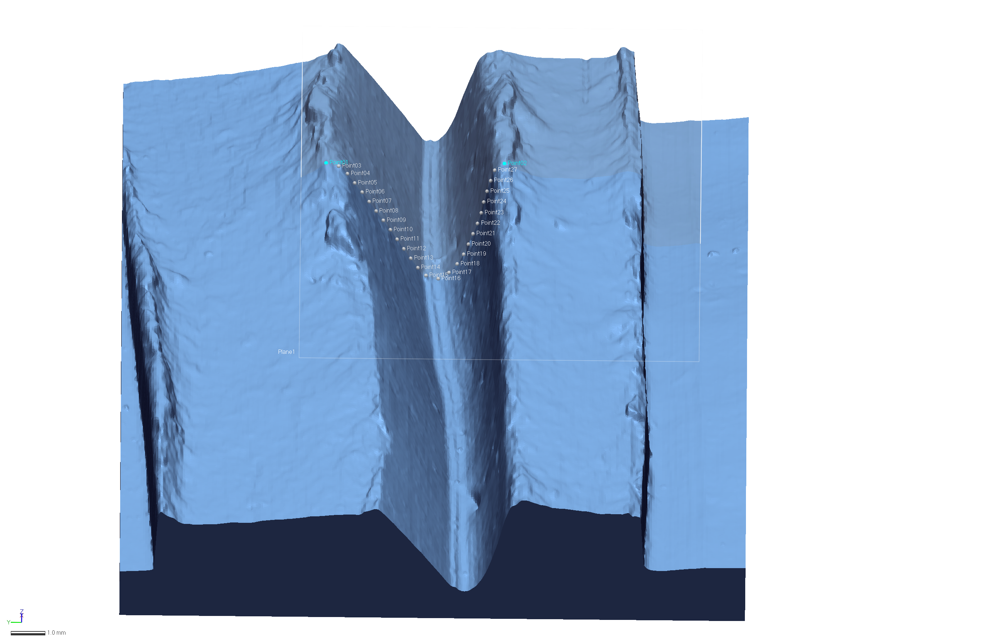

Chapter 3 Experimental sample - analysis
The inc2 field in the qdataEX file relates to the differences in shape that were noted when reviewing general incision morphology. Some were U-shaped and narrow, others U-shaped and wide (twice as wide as they are deep), and the remainder were V-shaped. The V-shaped incisions were the only incisions made by multiple tools. In this study, the narrow and wide U-shaped incisions were made by different tools; however, it is not difficult to imagine a scenario where both of the U-shaped incisions could also have been produced with two different sides of the same tool. It is thus necessary to use abundant caution when interpreting potential tool shape, or the number of tools employed in the application of incisions. To avoid confounding the issue, the tip of each of the tools used to generate the incision is referred to as a bit in the remainder of this document. Tools may have multiple bits, but each bit is capable of generating different incision profiles.
3.1 Landmarking protocol
The characteristic points and tangents used in the landmarking protocol were inspired by the work of Birkhoff (1933). Using Geomagic Design X, a plane was inserted to capture the deepest incision profile.

The horizontal tangent was calculated for the rise in the clay matrix on either side of the incision. A linear distance was then calculated to identify the mid-point of the incision, and the deepest part of the incision profile was oriented to the right of center.

Once properly oriented, the horizontal tangent of the left was assigned as Point 01, and the horizontal tangent on the right as Point 02. Twenty five equidistant landmarks were subsequently placed between the two landmarks along the spline.

Landmarks and semilandmarks for each specimen were then exported as CSV files (included in supplemental materials as dataEX), which were used in the geometric morphometric analysis presented in the next chapter.
# library(devtools)
# devtools::install_github("geomorphR/geomorph", ref = "Stable", build_vignettes = TRUE)
library(geomorph)
library(wesanderson)
setwd(getwd())
source('readmulti.csv.R')
# Read .csv files
setwd("./dataEX")
filelist <- list.files(pattern = ".csv")
coords <- readmulti.csv(filelist)
setwd("../")
# read qualitative data
qdata <- read.csv("qdataEX.csv",header=TRUE,row.names=1)
qdata <- qdata[match(dimnames(coords)[[3]],rownames(qdata)),]
qdata## incision inc2
## ex-tile2 U Un
## ex-tile3a U Uw
## ex-tile3b V V
## ex-tile4a U Un
## ex-tile4b V V
## ex-tile5a V V
## ex-tile5b U Un
## ex-tile6a U Un
## ex-tile6b V V
## ex-tile7a U Uw
## ex-tile7b V V
## ex-tile8a U Uw
## ex-tile8b V V3.2 Generalised Procrustes Analysis
Y.gpa <- gpagen(coords, PrinAxes = TRUE, ProcD = TRUE, Proj = TRUE, print.progress = FALSE)
# 3D GPA plot
knitr::include_graphics('images/gpa3dEX.png')
fig.cap = "Results of generalised Procrustes analysis."
# geomorph data frame
gdf <- geomorph.data.frame(shape = Y.gpa$coords, size = Y.gpa$Csize, inc = qdata$incision, inc2 = qdata$inc2)
csz <- Y.gpa$Csize # attribute for boxplot
inc <- qdata$incision
inc2 <- qdata$inc2 # attribute for boxplot
# boxplot of incision (centroid) size by incision profile (inc)
boxplot(csz~inc,
main = "Centroid size of experimental incisions by profile",
names = c("U", "V"),
xlab = "Incision Profile",
ylab = "Centroid Size",
col = wes_palette("Moonrise2")
)
fig.cap = "Boxplot of experimental incision profile types (U-shaped and V-shaped)."
# boxplot of incision (centroid) size by incision profile (inc2)
boxplot(csz~inc2,
main = "Centroid size of experimental incisions by profile type",
names = c("Un", "Uw", "V"),
xlab = "Incision Profile (inc2)",
ylab = "Centroid Size",
col = wes_palette("Moonrise2")
)
3.3 Principal Components Analysis
##
## Ordination type: Principal Component Analysis
## Centering and projection: OLS
## Number of observations 13
## Number of vectors 13
##
## Importance of Components:
## Comp1 Comp2 Comp3 Comp4
## Eigenvalues 0.0441045 0.005014108 0.003398275 0.0003353507
## Proportion of Variance 0.8226607 0.093525803 0.063386441 0.0062551403
## Cumulative Proportion 0.8226607 0.916186472 0.979572913 0.9858280536
## Comp5 Comp6 Comp7 Comp8
## Eigenvalues 0.0002822004 0.0001809061 0.0001525644 7.081347e-05
## Proportion of Variance 0.0052637514 0.0033743561 0.0028457127 1.320850e-03
## Cumulative Proportion 0.9910918051 0.9944661611 0.9973118738 9.986327e-01
## Comp9 Comp10 Comp11 Comp12
## Eigenvalues 3.658645e-05 2.060166e-05 1.050025e-05 5.614060e-06
## Proportion of Variance 6.824299e-04 3.842732e-04 1.958562e-04 1.047164e-04
## Cumulative Proportion 9.993152e-01 9.996994e-01 9.998953e-01 1.000000e+00
## Comp13
## Eigenvalues 2.143147e-33
## Proportion of Variance 3.997511e-32
## Cumulative Proportion 1.000000e+00# set plot parameters
pch.gps.1 <- c(15,17)[as.factor(inc)]
col.gps.1 <- wes_palette("Moonrise2")[as.factor(inc)]
col.hull.1 <- c("#798E87","#C27D38")
# plotPCAbyinc2
pc.plot.1 <- plot(pca,asp = 1,
pch = pch.gps.1,
col = col.gps.1)
shapeHulls(pc.plot.1,
groups = inc,
group.cols = col.hull.1)
fig.cap = "Plot of PC1 and PC2 for U- and V-shaped incisions."
# set plot parameters
pch.gps.2 <- c(15,17,19)[as.factor(inc2)]
col.gps.2 <- wes_palette("Moonrise2")[as.factor(inc2)]
col.hull.2 <- c("#798E87","#C27D38","#CCC591")
# plotPCAbyinc2
pc.plot.2 <- plot(pca,asp = 1,
pch = pch.gps.2,
col = col.gps.2)
shapeHulls(pc.plot.2,
groups = inc2,
group.cols = col.hull.2)
3.4 Define models
# allometry
fit.size <- procD.lm(shape ~ size, data = gdf, print.progress = FALSE, iter = 9999)
# allometry - common allometry, different means -> inc
fit.sz.cinc <- procD.lm(shape ~ size + inc, data = gdf, print.progress = FALSE, iter = 9999)
# allometry - unique allometries -> inc
fit.sz.uinc <- procD.lm(shape ~ size * inc, data = gdf, print.progress = FALSE, iter = 9999)
# allometry - common allometry, different means -> inc2
fit.sz.cinc2 <- procD.lm(shape ~ size + inc2, data = gdf, print.progress = FALSE, iter = 9999)
# allometry - unique allometries -> inc2
fit.sz.uinc2 <- procD.lm(shape ~ size * inc2, data = gdf, print.progress = FALSE, iter = 9999)
# size as a function of group
fit.sizeinc <- procD.lm(size ~ inc, data = gdf, print.progress = FALSE, iter = 9999)
fit.sizeinc2 <- procD.lm(size ~ inc2, data = gdf, print.progress = FALSE, iter = 9999)
# shape as a function of group
fit.shapeinc <- procD.lm(shape ~ inc, data = gdf, print.progress = FALSE, iter = 9999)
fit.shapeinc2 <- procD.lm(shape ~ inc2, data = gdf, print.progress = FALSE, iter = 9999)3.5 Allometry
##
## Analysis of Variance, using Residual Randomization
## Permutation procedure: Randomization of null model residuals
## Number of permutations: 10000
## Estimation method: Ordinary Least Squares
## Sums of Squares and Cross-products: Type I
## Effect sizes (Z) based on F distributions
##
## Df SS MS Rsq F Z Pr(>F)
## size 1 0.28340 0.283400 0.44051 8.6608 2.3394 0.0052 **
## Residuals 11 0.35994 0.032722 0.55949
## Total 12 0.64334
## ---
## Signif. codes: 0 '***' 0.001 '**' 0.01 '*' 0.05 '.' 0.1 ' ' 1
##
## Call: procD.lm(f1 = shape ~ size, iter = 9999, data = gdf, print.progress = FALSE)##
## Analysis of Variance, using Residual Randomization
## Permutation procedure: Randomization of null model residuals
## Number of permutations: 10000
## Estimation method: Ordinary Least Squares
## Sums of Squares and Cross-products: Type I
## Effect sizes (Z) based on F distributions
##
## Df SS MS Rsq F Z Pr(>F)
## size 1 0.28340 0.283400 0.44051 21.032 3.1042 1e-04 ***
## inc 1 0.22519 0.225195 0.35004 16.712 3.1351 1e-04 ***
## Residuals 10 0.13475 0.013475 0.20945
## Total 12 0.64334
## ---
## Signif. codes: 0 '***' 0.001 '**' 0.01 '*' 0.05 '.' 0.1 ' ' 1
##
## Call: procD.lm(f1 = shape ~ size + inc, iter = 9999, data = gdf, print.progress = FALSE)##
## Analysis of Variance, using Residual Randomization
## Permutation procedure: Randomization of null model residuals
## Number of permutations: 10000
## Estimation method: Ordinary Least Squares
## Sums of Squares and Cross-products: Type I
## Effect sizes (Z) based on F distributions
##
## Df SS MS Rsq F Z Pr(>F)
## size 1 0.28340 0.283400 0.44051 29.8384 3.3937 1e-04 ***
## inc 1 0.22519 0.225195 0.35004 23.7101 3.4382 1e-04 ***
## size:inc 1 0.04927 0.049269 0.07658 5.1874 2.1765 0.0104 *
## Residuals 9 0.08548 0.009498 0.13287
## Total 12 0.64334
## ---
## Signif. codes: 0 '***' 0.001 '**' 0.01 '*' 0.05 '.' 0.1 ' ' 1
##
## Call: procD.lm(f1 = shape ~ size * inc, iter = 9999, data = gdf, print.progress = FALSE)##
## Analysis of Variance, using Residual Randomization
## Permutation procedure: Randomization of null model residuals
## Number of permutations: 10000
## Estimation method: Ordinary Least Squares
## Effect sizes (Z) based on F distributions
##
## ResDf Df RSS SS MS Rsq F
## shape ~ size + inc (Null) 10 1 0.13475 0.000000
## shape ~ size * inc 9 1 0.08548 0.049269 0.049269 0.076583 5.1874
## Total 12 0.64334
## Z P Pr(>F)
## shape ~ size + inc (Null)
## shape ~ size * inc 2.1765 0.0104
## Total##
## Analysis of Variance, using Residual Randomization
## Permutation procedure: Randomization of null model residuals
## Number of permutations: 10000
## Estimation method: Ordinary Least Squares
## Sums of Squares and Cross-products: Type I
## Effect sizes (Z) based on F distributions
##
## Df SS MS Rsq F Z Pr(>F)
## size 1 0.28340 0.283400 0.44051 26.361 3.2826 1e-04 ***
## inc2 2 0.26319 0.131593 0.40909 12.240 3.3437 3e-04 ***
## Residuals 9 0.09676 0.010751 0.15040
## Total 12 0.64334
## ---
## Signif. codes: 0 '***' 0.001 '**' 0.01 '*' 0.05 '.' 0.1 ' ' 1
##
## Call: procD.lm(f1 = shape ~ size + inc2, iter = 9999, data = gdf, print.progress = FALSE)##
## Analysis of Variance, using Residual Randomization
## Permutation procedure: Randomization of null model residuals
## Number of permutations: 10000
## Estimation method: Ordinary Least Squares
## Sums of Squares and Cross-products: Type I
## Effect sizes (Z) based on F distributions
##
## Df SS MS Rsq F Z Pr(>F)
## size 1 0.28340 0.283400 0.44051 26.4390 3.2457 1e-04 ***
## inc2 2 0.26319 0.131593 0.40909 12.2766 3.2645 0.0003 ***
## size:inc2 2 0.02172 0.010862 0.03377 1.0134 0.1882 0.4522
## Residuals 7 0.07503 0.010719 0.11663
## Total 12 0.64334
## ---
## Signif. codes: 0 '***' 0.001 '**' 0.01 '*' 0.05 '.' 0.1 ' ' 1
##
## Call: procD.lm(f1 = shape ~ size * inc2, iter = 9999, data = gdf, print.progress = FALSE)##
## Analysis of Variance, using Residual Randomization
## Permutation procedure: Randomization of null model residuals
## Number of permutations: 10000
## Estimation method: Ordinary Least Squares
## Effect sizes (Z) based on F distributions
##
## ResDf Df RSS SS MS Rsq F
## shape ~ size + inc2 (Null) 9 1 0.09676 0.000000
## shape ~ size * inc2 7 2 0.07503 0.021725 0.010862 0.033768 1.0134
## Total 12 0.64334
## Z P Pr(>F)
## shape ~ size + inc2 (Null)
## shape ~ size * inc2 0.18816 0.4522
## Total# allometry plots
# regscore (Drake and Klingenberg 2008)
plot(fit.size, type = "regression", reg.type = "RegScore", predictor = log(gdf$size), pch = pch.gps.1, col = col.gps.1)

# common allometric component (Mitteroecker 2004)
plotAllometry(fit.size, size = gdf$size, logsz = TRUE, method = "CAC", pch = pch.gps.1, col = col.gps.1)

# size-shape pca (Mitteroecker 2004)
plotAllometry(fit.size, size = gdf$size, logsz = TRUE, method = "size.shape", pch = pch.gps.1, col = col.gps.1)

# predline (Adams and Nistri 2010)
plotAllometry(fit.sz.uinc, size = gdf$size, logsz = TRUE, method = "PredLine", pch = pch.gps.1, col = col.gps.1)

3.6 Size/Shape ~ Incision Profile?
##
## Analysis of Variance, using Residual Randomization
## Permutation procedure: Randomization of null model residuals
## Number of permutations: 10000
## Estimation method: Ordinary Least Squares
## Sums of Squares and Cross-products: Type I
## Effect sizes (Z) based on F distributions
##
## Df SS MS Rsq F Z Pr(>F)
## inc 1 0.40707 0.40707 0.63274 18.951 3.026 5e-04 ***
## Residuals 11 0.23628 0.02148 0.36726
## Total 12 0.64334
## ---
## Signif. codes: 0 '***' 0.001 '**' 0.01 '*' 0.05 '.' 0.1 ' ' 1
##
## Call: procD.lm(f1 = shape ~ inc, iter = 9999, data = gdf, print.progress = FALSE)##
## Analysis of Variance, using Residual Randomization
## Permutation procedure: Randomization of null model residuals
## Number of permutations: 10000
## Estimation method: Ordinary Least Squares
## Sums of Squares and Cross-products: Type I
## Effect sizes (Z) based on F distributions
##
## Df SS MS Rsq F Z Pr(>F)
## inc 1 41.194 41.194 0.20167 2.7787 0.93839 0.129
## Residuals 11 163.075 14.825 0.79833
## Total 12 204.269
##
## Call: procD.lm(f1 = size ~ inc, iter = 9999, data = gdf, print.progress = FALSE)3.7 Size/Shape ~ Incision Profile 2?
##
## Analysis of Variance, using Residual Randomization
## Permutation procedure: Randomization of null model residuals
## Number of permutations: 10000
## Estimation method: Ordinary Least Squares
## Sums of Squares and Cross-products: Type I
## Effect sizes (Z) based on F distributions
##
## Df SS MS Rsq F Z Pr(>F)
## inc2 2 0.54162 0.270809 0.84188 26.621 4.0495 1e-04 ***
## Residuals 10 0.10173 0.010173 0.15812
## Total 12 0.64334
## ---
## Signif. codes: 0 '***' 0.001 '**' 0.01 '*' 0.05 '.' 0.1 ' ' 1
##
## Call: procD.lm(f1 = shape ~ inc2, iter = 9999, data = gdf, print.progress = FALSE)# pairwise comparison of LS means = which differ?
sh.inc2 <- pairwise(fit.shapeinc2, groups = qdata$inc2)
summary(sh.inc2, confidence = 0.95, test.type = "dist")##
## Pairwise comparisons
##
## Groups: Un Uw V
##
## RRPP: 10000 permutations
##
## LS means:
## Vectors hidden (use show.vectors = TRUE to view)
##
## Pairwise distances between means, plus statistics
## d UCL (95%) Z Pr > d
## Un:Uw 0.2801554 0.3138160 1.551920 0.0885
## Un:V 0.2689149 0.2657416 2.036655 0.0465
## Uw:V 0.4923652 0.2925628 4.715051 0.0001# pairwise distance between variances = standardization?
summary(sh.inc2, confidence = 0.95, test.type = "var")##
## Pairwise comparisons
##
## Groups: Un Uw V
##
## RRPP: 10000 permutations
##
##
## Observed variances by group
##
## Un Uw V
## 0.004544256 0.010684141 0.008582835
##
## Pairwise distances between variances, plus statistics
## d UCL (95%) Z Pr > d
## Un:Uw 0.006139884 0.008120517 1.1339478 0.1455
## Un:V 0.004038578 0.006905215 0.5429554 0.2761
## Uw:V 0.002101306 0.007528055 -0.4700532 0.6097##
## Analysis of Variance, using Residual Randomization
## Permutation procedure: Randomization of null model residuals
## Number of permutations: 10000
## Estimation method: Ordinary Least Squares
## Sums of Squares and Cross-products: Type I
## Effect sizes (Z) based on F distributions
##
## Df SS MS Rsq F Z Pr(>F)
## inc2 2 148.75 74.374 0.7282 13.396 2.2867 0.0031 **
## Residuals 10 55.52 5.552 0.2718
## Total 12 204.27
## ---
## Signif. codes: 0 '***' 0.001 '**' 0.01 '*' 0.05 '.' 0.1 ' ' 1
##
## Call: procD.lm(f1 = size ~ inc2, iter = 9999, data = gdf, print.progress = FALSE)# pairwise comparison of LS means = which differ?
sz.inc2 <- pairwise(fit.sizeinc2, groups = qdata$inc2)
summary(sz.inc2, confidence = 0.95, test.type = "dist")##
## Pairwise comparisons
##
## Groups: Un Uw V
##
## RRPP: 10000 permutations
##
## LS means:
## Vectors hidden (use show.vectors = TRUE to view)
##
## Pairwise distances between means, plus statistics
## d UCL (95%) Z Pr > d
## Un:Uw 7.9208803 5.971568 2.942239 0.0050
## Un:V 0.1761291 5.062068 -1.293163 0.9510
## Uw:V 8.0970094 5.576685 3.381419 0.0014# pairwise distance between variances = standardization?
summary(sz.inc2, confidence = 0.95, test.type = "var")##
## Pairwise comparisons
##
## Groups: Un Uw V
##
## RRPP: 10000 permutations
##
##
## Observed variances by group
##
## Un Uw V
## 1.817578 2.993043 6.545157
##
## Pairwise distances between variances, plus statistics
## d UCL (95%) Z Pr > d
## Un:Uw 1.175464 4.698405 -0.5568451 0.6383
## Un:V 4.727578 3.903940 2.5886896 0.0160
## Uw:V 3.552114 4.358573 1.3182328 0.11853.8 Morphological disparity
# morphological disparity: does incision morphology display greater shape variation among individuals relative to incision profile shape?
morphol.disparity(fit.shapeinc, groups = qdata$inc2, data = gdf, print.progress = FALSE, iter = 9999)##
## Call:
## morphol.disparity(f1 = fit.shapeinc, groups = qdata$inc2, iter = 9999,
## data = gdf, print.progress = FALSE)
##
##
##
## Randomized Residual Permutation Procedure Used
## 10000 Permutations
##
## Procrustes variances for defined groups
## Un Uw V
## 0.018960247 0.036312568 0.008582835
##
##
## Pairwise absolute differences between variances
## Un Uw V
## Un 0.00000000 0.01735232 0.01037741
## Uw 0.01735232 0.00000000 0.02772973
## V 0.01037741 0.02772973 0.00000000
##
##
## P-Values
## Un Uw V
## Un 1.0000 0.2677 0.4830
## Uw 0.2677 1.0000 0.0205
## V 0.4830 0.0205 1.0000# morphological disparity: does incision morphology display greater size variation among individuals relative to incision profile size?
morphol.disparity(fit.sizeinc, groups = qdata$inc2, data = gdf, print.progress = FALSE, iter = 9999)##
## Call:
## morphol.disparity(f1 = fit.sizeinc, groups = qdata$inc2, iter = 9999,
## data = gdf, print.progress = FALSE)
##
##
##
## Randomized Residual Permutation Procedure Used
## 10000 Permutations
##
## Procrustes variances for defined groups
## Un Uw V
## 13.341315 23.479686 6.545157
##
##
## Pairwise absolute differences between variances
## Un Uw V
## Un 0.000000 10.13837 6.796158
## Uw 10.138371 0.00000 16.934529
## V 6.796158 16.93453 0.000000
##
##
## P-Values
## Un Uw V
## Un 1.0000 0.2941 0.4539
## Uw 0.2941 1.0000 0.0255
## V 0.4539 0.0255 1.00003.9 Mean shapes
# subset landmark coordinates to produce mean shapes by site
new.coords <- coords.subset(A = Y.gpa$coords, group = qdata$inc2)
names(new.coords)## [1] "Un" "Uw" "V"# group shape means
mean <- lapply(new.coords, mshape)
# plot(mean$Uw)
# mean shapes
knitr::include_graphics('images/mshapeEX.png')
References
Birkhoff, George D. 1933. Aesthetic Measure. Cambridge: Harvard University Press.